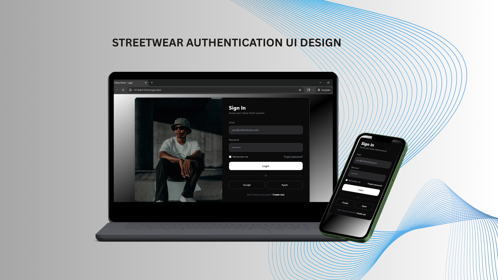
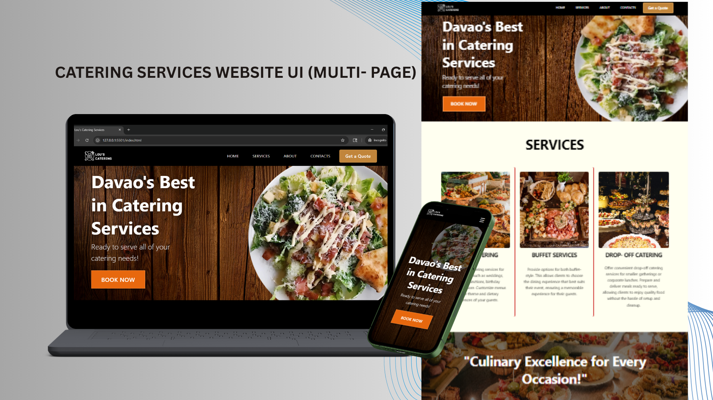

FRONT-END WEB DEVELOPER • UI/UX DESIGNER
Aspiring Front-End Web Developer and UI/UX Designer passionate about creating clean, responsive, and user-friendly digital experiences. I design interfaces in Figma, create custom visual assets using Krita, and bring my designs to life through front-end development. The projects featured in this portfolio showcase both my UI/UX design and development work.
📍 DDF Village, Mandug, Davao City
📧 nicacainglet1302@gmail.com
Projects Built
IT Certificates
Learning Journey
Design & Development
CORE TECHNOLOGIES
Technologies and tools I currently use while continuously improving my front-end development skills through hands-on projects and consistent practice.
Semantic structure and accessibility
Responsive layouts and styling
Utility-first modern UI workflow
DOM interaction and interactivity
Database fundamentals and queries
Learning, Building, Improving.
CREATIVE WORKFLOW
Tools I use for UI/UX design, wireframing, prototyping, and creating custom visual assets. These tools help me transform ideas into user-friendly interfaces before bringing them to life through front-end development.
UI/UX design, wireframing, prototyping, user flows, and interface design.
Custom illustrations, icons, visual assets, and UI components
"Designing intuitive experiences, one interface at a time."
CONTINUOUS LEARNING
Learning, Building, Improving — continuously strengthening my foundation in front-end development through hands-on projects, self-study, and technical certifications.
Certiport Certification
Focused on responsive web design, semantic HTML structure, CSS styling, layouts, and front-end development fundamentals.
Continuous Self-Learning
Currently improving responsive design, UI development, accessibility, JavaScript fundamentals, and modern Tailwind CSS workflows through personal projects and practice.
The following projects showcase both my UI/UX design and front-end development skills. All interfaces were personally designed in Figma and developed using modern front-end technologies.

